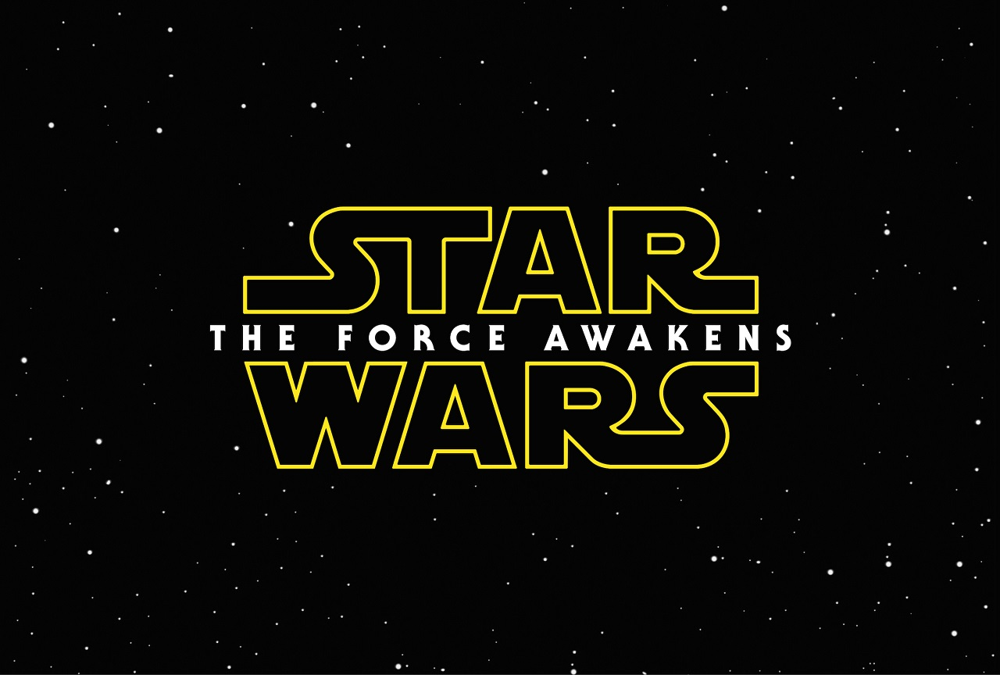

Films en series

Movie
News
Star Wars: The Force Awakens - Nieuwe personages gelekt
18-06-2015 | by Joel Lopulalan |De betreffende foto's tonen meer oude gezichten in Episode VII
Een aantal onthullende foto's van Star Wars: The Force Awakens zijn online gekomen.
Wees gewaarschuwd, het zijn kleine SPOILERS omdat twee van de foto's personages van de originele trilogie onthullen voor Episode VII.
MakingStarWars post naast de spoilende plaatjes ook een foto van Han Solo, Rey en Finn aan boord van de Millennium Falcon en een foto van Domnhall Gleeson's bad-guy-personage The General.
StarWars7news.com postte drie foto's. Een daarvan lijkt Greg Grunberg als X-Wing piloot te zijn.
Oh, maar dat is niet alles. Als de foto's echt zijn, dan zitten er twee Return of the Jedi-personages in The Force Awakens.